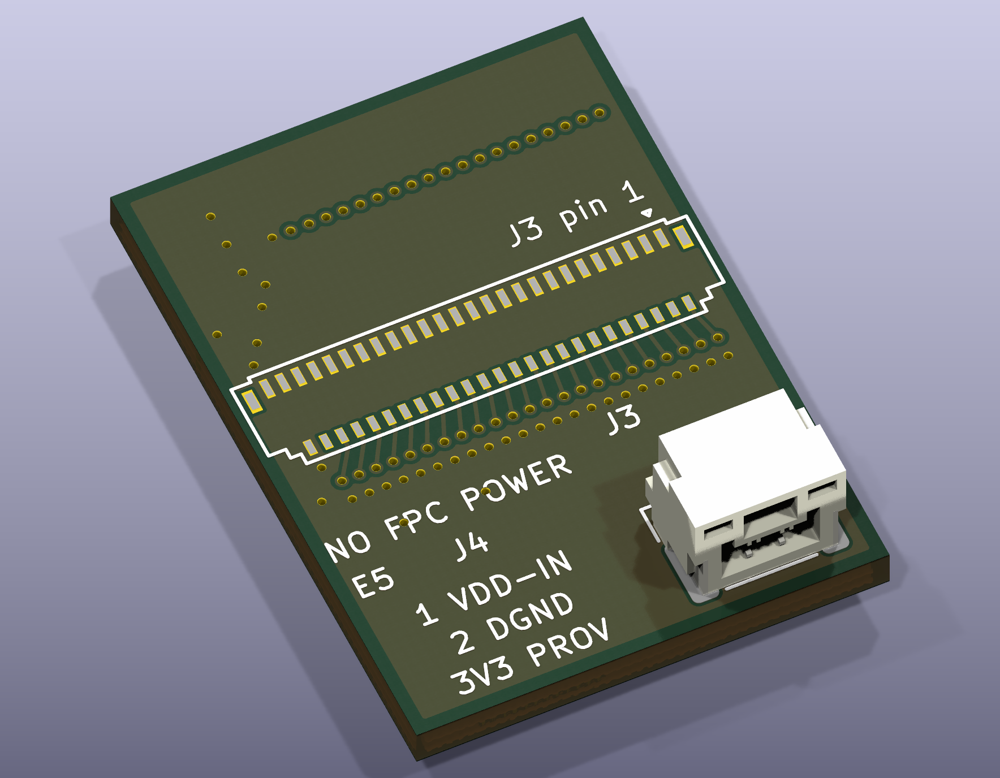

Completed layout work
Ground copper, stitching vias and the separate power connector are implemented. The latest layout passes DRC and connectivity checks.
Weekend update · 3–4 October 2026
E5 brings the LDO signals to the flex interface and uses a separate locking JST GH connector for VDD and GND. J1 and J19 are included mechanically; J19 is intentionally unconnected.

Loading current 3D preview…
Drag to rotate · scroll to zoom · right-drag to pan
E5 · separate JST GH VDD/GND connector implemented. J1/J19 and J3 housing models are omitted; surface copper graphics may be incomplete. Current requirement, analog-ground return and populated fit remain to be verified.
LDO routing adapter
I finished routing the LDO adapter and added ground copper and stitching vias. Following Gerald’s suggestion, I added a separate locking VDD/GND connector, while keeping power off the signal flex cable. Both J1 and J19 are included mechanically, with J19 intentionally unconnected. The latest layout passes DRC and connectivity checks, and I’ve prepared a concise schematic and pin-to-pin guide. Before fabrication, I still need to verify the actual current requirement, analog-ground return, and cable/connector fit.
Ground copper, stitching vias and the separate power connector are implemented. The latest layout passes DRC and connectivity checks.
Verify the actual load current, analog-ground return and cable/connector fit. Power operation still needs qualification.
Revision history
The October 2 C2 mechanical preview is an earlier study. The A1R2 carrier assembly depicts the E3 adapter; E5 has its own later routing and power-connector changes.